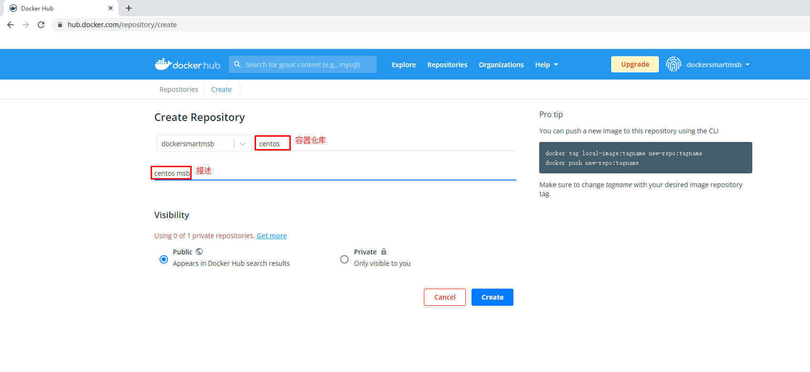

Docker容器镜像加速器及本地容器镜像仓库¶
一、容器镜像加速器¶
由于国内访问国外的容器镜像仓库速度比较慢，因此国内企业创建了容器镜像加速器，以方便国内用户使用容器镜像。
1.1 获取阿里云容器镜像加速地址¶


1.2 配置docker daemon使用加速器¶
添加daemon.json配置文件
# vim /etc/docker/daemon.json
# cat /etc/docker/daemon.json
{
"registry-mirrors": ["https://s27w6kze.mirror.aliyuncs.com"]
}
重启docker
# systemctl daemon-reload
# systemctl restart docker
尝试下载容器镜像
# docker pull centos
二、容器镜像仓库¶
2.1 docker hub¶
2.1.1 注册¶
准备邮箱及用户ID


2.1.2 登录¶


2.1.3 创建容器镜像仓库¶



2.1.4 在本地登录Docker Hub¶
默认可以不添加docker hub容器镜像仓库地址
# docker login
Login with your Docker ID to push and pull images from Docker Hub. If you don't have a Docker ID, head over to https://hub.docker.com to create one.
Username: dockersmartmsb
Password:
WARNING! Your password will be stored unencrypted in /root/.docker/config.json.
Configure a credential helper to remove this warning. See
https://docs.docker.com/engine/reference/commandline/login/#credentials-store
Login Succeeded 成功
登出
# docker logout
Removing login credentials for https://index.docker.io/v1/
2.1.5 上传容器镜像¶
在登录Docker Hub主机上传容器镜像,向全球用户共享容器镜像。
为容器镜像重新打标记
原始容器镜像
# docker images
REPOSITORY TAG IMAGE ID CREATED SIZE
centos latest 5d0da3dc9764 4 months ago 231MB
重新为容器镜像打标记
# docker tag centos:latest dockersmartmsb/centos:v1
重新打标记后容器镜像
# docker images
REPOSITORY TAG IMAGE ID CREATED SIZE
dockersmartmsb/centos v1 5d0da3dc9764 4 months ago 231MB
centos latest 5d0da3dc9764 4 months ago 231MB
上传容器镜像至docker hub
# docker push dockersmartmsb/centos:v1
The push refers to repository [docker.io/dockersmartmsb/centos]
74ddd0ec08fa: Mounted from library/centos
v1: digest: sha256:a1801b843b1bfaf77c501e7a6d3f709401a1e0c83863037fa3aab063a7fdb9dc size: 529

2.1.6 下载容器镜像¶
在其它主机上下载
下载
# docker pull dockersmartmsb/centos:v1
v1: Pulling from dockersmartmsb/centos
a1d0c7532777: Pull complete
Digest: sha256:a1801b843b1bfaf77c501e7a6d3f709401a1e0c83863037fa3aab063a7fdb9dc
Status: Downloaded newer image for dockersmartmsb/centos:v1
docker.io/dockersmartmsb/centos:v1
查看下载后容器镜像
# docker images
REPOSITORY TAG IMAGE ID CREATED SIZE
dockersmartmsb/centos v1 5d0da3dc9764 4 months ago 231MB
2.2 harbor¶
2.2.1 获取 docker compose二进制文件¶
下载docker-compose二进制文件
# wget https://github.com/docker/compose/releases/download/1.25.0/docker-compose-Linux-x86_64
查看已下载二进制文件
# ls
docker-compose-Linux-x86_64
移动二进制文件到/usr/bin目录，并更名为docker-compose
# mv docker-compose-Linux-x86_64 /usr/bin/docker-compose
为二进制文件添加可执行权限
# chmod +x /usr/bin/docker-compose
安装完成后，查看docker-compse版本
# docker-compose version
docker-compose version 1.25.0, build 0a186604
docker-py version: 4.1.0
CPython version: 3.7.4
OpenSSL version: OpenSSL 1.1.0l 10 Sep 2019
2.2.2 获取harbor安装文件¶


下载harbor离线安装包
# wget https://github.com/goharbor/harbor/releases/download/v2.4.1/harbor-offline-installer-v2.4.1.tgz
查看已下载的离线安装包
# ls
harbor-offline-installer-v2.4.1.tgz
2.2.3 获取TLS文件¶
查看准备好的证书
# ls
kubemsb.com_nginx.zip
解压证书压缩包文件
# unzip kubemsb.com_nginx.zip
Archive: kubemsb.com_nginx.zip
Aliyun Certificate Download
inflating: 6864844_kubemsb.com.pem
inflating: 6864844_kubemsb.com.key
查看解压出的文件
# ls
6864844_kubemsb.com.key
6864844_kubemsb.com.pem
2.2.4 修改配置文件¶
解压harbor离线安装包
# tar xf harbor-offline-installer-v2.4.1.tgz
查看解压出来的目录
# ls
harbor
移动证书到harbor目录
# # mv 6864844_kubemsb.com.* harbor
查看harbor目录
# ls harbor
6864844_kubemsb.com.key 6864844_kubemsb.com.pem common.sh harbor.v2.4.1.tar.gz harbor.yml.tmpl install.sh LICENSE prepare
创建配置文件
# cd harbor/
# mv harbor.yml.tmpl harbor.yml
修改配置文件内容
# vim harbor.yml
# Configuration file of Harbor
# The IP address or hostname to access admin UI and registry service.
# DO NOT use localhost or 127.0.0.1, because Harbor needs to be accessed by external clients.
hostname: www.kubemsb.com 修改为域名，而且一定是证书签发的域名
# http related config
http:
# port for http, default is 80. If https enabled, this port will redirect to https port
port: 80
# https related config
https:
# https port for harbor, default is 443
port: 443
# The path of cert and key files for nginx
certificate: /root/harbor/6864844_kubemsb.com.pem 证书
private_key: /root/harbor/6864844_kubemsb.com.key 密钥
# # Uncomment following will enable tls communication between all harbor components
# internal_tls:
# # set enabled to true means internal tls is enabled
# enabled: true
# # put your cert and key files on dir
# dir: /etc/harbor/tls/internal
# Uncomment external_url if you want to enable external proxy
# And when it enabled the hostname will no longer used
# external_url: https://reg.mydomain.com:8433
# The initial password of Harbor admin
# It only works in first time to install harbor
# Remember Change the admin password from UI after launching Harbor.
harbor_admin_password: 12345 访问密码
......
2.2.5 执行预备脚本¶
# ./prepare
输出
prepare base dir is set to /root/harbor
Clearing the configuration file: /config/portal/nginx.conf
Clearing the configuration file: /config/log/logrotate.conf
Clearing the configuration file: /config/log/rsyslog_docker.conf
Generated configuration file: /config/portal/nginx.conf
Generated configuration file: /config/log/logrotate.conf
Generated configuration file: /config/log/rsyslog_docker.conf
Generated configuration file: /config/nginx/nginx.conf
Generated configuration file: /config/core/env
Generated configuration file: /config/core/app.conf
Generated configuration file: /config/registry/config.yml
Generated configuration file: /config/registryctl/env
Generated configuration file: /config/registryctl/config.yml
Generated configuration file: /config/db/env
Generated configuration file: /config/jobservice/env
Generated configuration file: /config/jobservice/config.yml
Generated and saved secret to file: /data/secret/keys/secretkey
Successfully called func: create_root_cert
Generated configuration file: /compose_location/docker-compose.yml
Clean up the input dir
2.2.6 执行安装脚本¶
# ./install.sh
输出
[Step 0]: checking if docker is installed ...
Note: docker version: 20.10.12
[Step 1]: checking docker-compose is installed ...
Note: docker-compose version: 1.25.0
[Step 2]: loading Harbor images ...
[Step 3]: preparing environment ...
[Step 4]: preparing harbor configs ...
prepare base dir is set to /root/harbor
[Step 5]: starting Harbor ...
Creating network "harbor_harbor" with the default driver
Creating harbor-log ... done
Creating harbor-db ... done
Creating registry ... done
Creating registryctl ... done
Creating redis ... done
Creating harbor-portal ... done
Creating harbor-core ... done
Creating harbor-jobservice ... done
Creating nginx ... done
✔ ----Harbor has been installed and started successfully.----
2.2.7 验证运行情况¶
# docker ps
CONTAINER ID IMAGE COMMAND CREATED STATUS PORTS NAMES
71c0db683e4a goharbor/nginx-photon:v2.4.1 "nginx -g 'daemon of…" About a minute ago Up About a minute (healthy) 0.0.0.0:80->8080/tcp, :::80->8080/tcp, 0.0.0.0:443->8443/tcp, :::443->8443/tcp nginx
4e3b53a86f01 goharbor/harbor-jobservice:v2.4.1 "/harbor/entrypoint.…" About a minute ago Up About a minute (healthy) harbor-jobservice
df76e1eabbf7 goharbor/harbor-core:v2.4.1 "/harbor/entrypoint.…" About a minute ago Up About a minute (healthy) harbor-core
eeb4d224dfc4 goharbor/harbor-portal:v2.4.1 "nginx -g 'daemon of…" About a minute ago Up About a minute (healthy) harbor-portal
70e162c38b59 goharbor/redis-photon:v2.4.1 "redis-server /etc/r…" About a minute ago Up About a minute (healthy) redis
8bcc0e9b06ec goharbor/harbor-registryctl:v2.4.1 "/home/harbor/start.…" About a minute ago Up About a minute (healthy) registryctl
d88196398df7 goharbor/registry-photon:v2.4.1 "/home/harbor/entryp…" About a minute ago Up About a minute (healthy) registry
ed5ba2ba9c82 goharbor/harbor-db:v2.4.1 "/docker-entrypoint.…" About a minute ago Up About a minute (healthy) harbor-db
dcb4b57c7542 goharbor/harbor-log:v2.4.1 "/bin/sh -c /usr/loc…" About a minute ago Up About a minute (healthy) 127.0.0.1:1514->10514/tcp harbor-log
2.2.8 访问harbor UI界面¶
2.2.8.1 在物理机通过浏览器访问¶


2.2.8.2 在Docker Host主机通过域名访问¶
添加域名解析
# vim /etc/hosts
# cat /etc/hosts
127.0.0.1 localhost localhost.localdomain localhost4 localhost4.localdomain4
::1 localhost localhost.localdomain localhost6 localhost6.localdomain6
192.168.10.155 www.kubemsb.com


三、docker镜像上传至Harbor及从harbor下载¶
3.1 修改docker daemon使用harbor¶
添加/etc/docker/daemon.json文件，默认不存在，需要手动添加
# vim /etc/docker/daemon.json
# cat /etc/docker/daemon.json
{
"insecure-registries": ["www.kubemsb.com"]
}
重启加载daemon配置
# systemctl daemon-reload
重启docker
# systemctl restart docker
3.2 docker tag¶
查看已有容器镜像文件
# docker images
REPOSITORY TAG IMAGE ID CREATED SIZE
centos latest 5d0da3dc9764 4 months ago 231MB
为已存在镜像重新添加tag
# docker tag centos:latest www.kubemsb.com/library/centos:v1
再次查看本地容器镜像
# docker images
REPOSITORY TAG IMAGE ID CREATED SIZE
centos latest 5d0da3dc9764 4 months ago 231MB
www.kubemsb.com/library/centos v1 5d0da3dc9764 4 months ago 231MB
3.3 docker push¶
# docker login www.kubemsb.com
Username: admin 用户名 admin
Password: 密码 12345
WARNING! Your password will be stored unencrypted in /root/.docker/config.json.
Configure a credential helper to remove this warning. See
https://docs.docker.com/engine/reference/commandline/login/#credentials-store
Login Succeeded 登陆成功
推送本地容器镜像到harbor仓库
# docker push www.kubemsb.com/library/centos:v1

3.4 docker pull¶
在其它主机上下载或使用harbor容器镜像仓库中的容器镜像
在本地添加域名解析
# vim /etc/hosts
# cat /etc/hosts
127.0.0.1 localhost localhost.localdomain localhost4 localhost4.localdomain4
::1 localhost localhost.localdomain localhost6 localhost6.localdomain6
192.168.10.155 www.kubemsb.com
在本地添加/etc/docker/daemon.json文件，其中为本地主机访问的容器镜像仓库
# vim /etc/docker/daemon.json
# cat /etc/docker/daemon.json
{
"insecure-registries": ["www.kubemsb.com"]
}
# systemctl daemon-reload
# systemctl restart docker
下载容器镜像
# docker pull www.kubemsb.com/library/centos:v1
v1: Pulling from library/centos
Digest: sha256:a1801b843b1bfaf77c501e7a6d3f709401a1e0c83863037fa3aab063a7fdb9dc
Status: Downloaded newer image for www.kubemsb.com/library/centos:v1
www.kubemsb.com/library/centos:v1
查看已下载的容器镜像
# docker images
REPOSITORY TAG IMAGE ID CREATED SIZE
www.kubemsb.com/library/centos v1 5d0da3dc9764 4 months ago 231MB